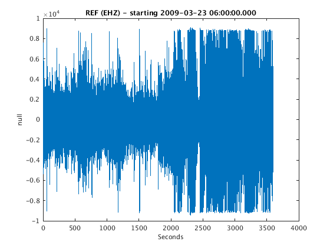
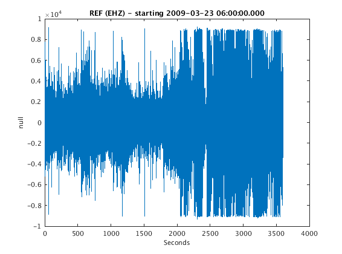
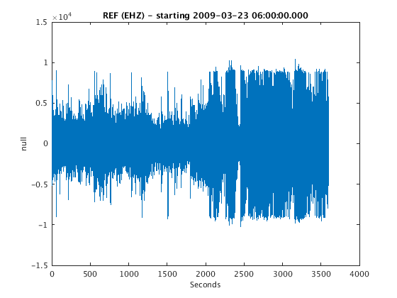
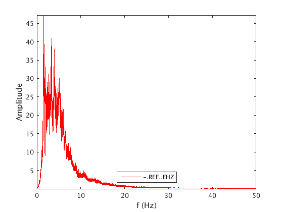
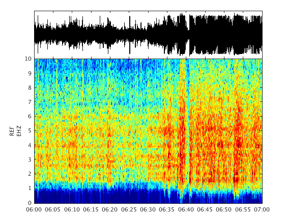
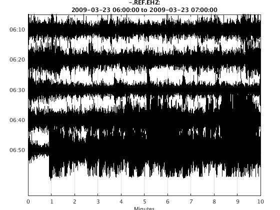

waveform
A waveform object is the GISMO data type for holding seismic waveform data. The basic idea is that in GISMO we don't care whether our waveform data come from a SAC, Seisan or Miniseed file, or from an Earthworm or Winston waveserver, or from an Antelope database - we just want to work with waveform objects. So GISMO contains routines to read these different data formats into waveform objects, and then methods for processing waveform objects.
Contents
Reading data files into GISMO
To read in a single data file, we just need the path and the file format:
Reading a MiniSEED (or SEED file) into MATLAB
filepath = fullfile(TESTDATA, 'waveform_data', 'REF.EHZ.2009.081') w = waveform(filepath, 'seed')
filepath =
/home/t/thompsong/src/GISMO.website/testdata/waveform_data/REF.EHZ.2009.081
ReadMSEEDFast: /home/t/thompsong/src/GISMO.website/testdata/waveform_data/REF.EHZ.2009.081
w =
ChannelTag: AV.REF..EHZ [network.station.location.channel]
start: 2009-03-22 00:00:00.000
duration( 1 days 00:00:00.010)
data: 8640001 samples
freq: 100.0000 Hz
units: Counts
history: [1 items], last modification:
Reading a SAC file into MATLAB
filepath = fullfile(TESTDATA, 'waveform_data', 'REF.EHZ.2009-03-22.sac') w = waveform(filepath, 'sac')
filepath =
/home/t/thompsong/src/GISMO.website/testdata/waveform_data/REF.EHZ.2009-03-22.sac
w =
ChannelTag: AV.REF..EHZ [network.station.location.channel]
start: 2009-03-22 00:00:00.000
duration(23:59:59.998)
data: 8640000 samples
freq: 100.0000 Hz
units: Counts
history: [2 items], last modification: 21-Mar-2017 20:12:07
With misc fields...
* SCALE: 1
* NZYEAR: 2009
* NZJDAY: 81
* NZHOUR: 0
* NZMIN: 0
* NZSEC: 0
* NZMSEC: 0
* IFTYPE: 1
* IZTYPE: 9
* LPSPOL: 0
* LOVROK: 1
* LCALDA: 1
* KEVNM: -12345 -12345
Reading a Seisan file into MATLAB
filepath = fullfile(TESTDATA, 'waveform_data', '2001-02-02-0303-55S.MVO___019') w = waveform(filepath, 'seisan')
filepath =
/home/t/thompsong/src/GISMO.website/testdata/waveform_data/2001-02-02-0303-55S.MVO___019
w =
[1x19] waveform object with fields:
ChannelTag
start
freq
data
units
history
With dissimilar fields
Reading from data sources
Reading waveform data from IRIS DMC webservices When reading from IRIS DMC webservices, you must tell GISMO which datasource to use ('irisdmcws'), which network/station/location/channel combinations to search for (using scnlobject or ChannelTag), and the start and end times of the data window you want to load. All these parameters must be passed to the waveform function call.
ds = datasource('irisdmcws'); ctag = ChannelTag('AV', 'RSO', '--', 'EHZ'); startTime = '2009/03/22 06:00:00'; endTime = '2009/03/22 07:00:00'; w = waveform(ds, ctag, startTime, endTime)
Requesting Data from the DMC...
w =
ChannelTag: AV.RSO..EHZ [network.station.location.channel]
start: 2009-03-22 06:00:00.001
duration(01:00:00.000)
data: 360000 samples
freq: 100.0000 Hz
units: M/S
history: [2 items], last modification: 21-Mar-2017 20:12:10
With misc fields...
* LATITUDE: 60.4616
* LONGITUDE: -152.756
* ELEVATION: 1921
* DEPTH: 0
* AZIMUTH: 0
* DIP: -90
* SENSITIVITY: 808410000
* SENSITIVITYFREQUENCY: 5
* INSTRUMENT:
* CALIB: 1.237e-09
* CALIB_APPLIED: NO
Reading waveform data from an Earthworm or Winston waveserver Reading from an Earthworm or Winston waveserver is exactly the same as reading from IRIS DMC webservices, except that the datasource should be 'earthworm' or 'winston', and the two arguments are the host-ip-address and the port number:
ds = datasource('winston', 'pubavo1.wr.usgs.gov', 16022); ctag = ChannelTag('AV', 'RSO', '--', 'EHZ'); startTime = now-1/24; endTime = now; w = waveform(ds, ctag, startTime, endTime)
w =
ChannelTag: AV.RSO.--.EHZ [network.station.location.channel]
start: 2017-03-21 19:12:10.180
duration(01:00:00.000)
data: 360000 samples
freq: 100.0000 Hz
units: Counts
history: [3 items], last modification: 21-Mar-2017 20:12:19
Reading waveform data from an CSS3.0 flat-file database (the format used by Antelope) Reading from an CSS3.0 flat-flat database is exactly the same as reading from IRIS DMC webservices, except that the datasource should be 'css3.0' (or 'antelope')
dbpath = fullfile(TESTDATA, 'css3.0', 'demodb') ds = datasource('antelope', dbpath); ctag = ChannelTag('AV', 'REF', '--', 'EHZ'); startTime = '2009/03/23 06:00:00'; endTime = '2009/03/23 07:00:00'; w = waveform(ds, ctag, startTime, endTime)
dbpath =
/home/t/thompsong/src/GISMO.website/testdata/css3.0/demodb
w =
ChannelTag: -.REF..EHZ [network.station.location.channel]
start: 2009-03-23 06:00:00.000
duration(01:00:00.000)
data: 360000 samples
freq: 100.0000 Hz
units: null
history: [1 items], last modification: 21-Mar-2017 20:12:19
With misc fields...
* CALIBRATION_APPLIED: NO
Processing / Analyzing waveform data
Once you have loaded your data into a waveform object (or into an array of waveform objects), you can do common tasks like make a time series plot, detrend or filter, plot an amplitude spectrum, a spectrogram or a helicorder. Here are some simple examples:
Plotting Typically the first analysis step is to look at the time series data.
plot(w)
Interpolate missing values Typically the data will have some missing samples, marked by NaN values. Some processing will break down with NaN values. So it may be a good idea to remove them with interpolation:
w = fillgaps(w,'interp')
w =
ChannelTag: -.REF..EHZ [network.station.location.channel]
start: 2009-03-23 06:00:00.000
duration(01:00:00.000)
data: 360000 samples
freq: 100.0000 Hz
units: null
history: [1 items], last modification: 21-Mar-2017 20:12:19
With misc fields...
* CALIBRATION_APPLIED: NO
Detrending Seismic data usually have an offset (DC) due to the seismometer not being completely level, and there is also often a drift because of temperature vairations or air currents. Detrending gets rid of this. Note that detrending will fail if NaN values are present. So use the 'fillgaps' method first, presented in the previous step.
w = detrend(w) plot(w)
w =
ChannelTag: -.REF..EHZ [network.station.location.channel]
start: 2009-03-23 06:00:00.000
duration(01:00:00.000)
data: 360000 samples
freq: 100.0000 Hz
units: null
history: [1 items], last modification: 21-Mar-2017 20:12:19
With misc fields...
* CALIBRATION_APPLIED: NO
 Filtering To remove non-linear trends in data, a high-pass filter is helpful. For example, to apply a 0.5-Hz high pass filter, 2 poles, in both directions (acausal):
f = filterobject('h', 0.5, 2)
w = filtfilt(f,w)
plot(w)
f =
type: H (High-pass)
cutoff: 0.5 Hz
poles: 2
f =
type: H (High-pass)
cutoff: 0.5 Hz
poles: 2
WN =
0.0100
w =
ChannelTag: -.REF..EHZ [network.station.location.channel]
start: 2009-03-23 06:00:00.000
duration(01:00:00.000)
data: 360000 samples
freq: 100.0000 Hz
units: null
history: [2 items], last modification: 21-Mar-2017 20:12:21
With misc fields...
* CALIBRATION_APPLIED: NO
 Here are examples of band-pass filters and low-pass filters:
- Band-pass 0.5-10 Hz, 3 poles
f = filterobject('b', [0.5 10], 3)- Low-pass 25 Hz, 4 poles
f = filterobject('l', 25, 4)If only one-way (causal) filtering is wanted, use 'filter' instead of 'filtfilt'.
Spectrum An amplitude spectrum can be generated with:
plot_spectrum(w)
ans =
f: [1x262145 double]
amp: [1x262145 double]
phi: [1x262145 double]
peakf: 1.5484
meanf: 6.3611
freqindex: -1.0293
freqratio: -1.7880
 Spectrogram A spectrogram can be generated with:
figure spectrogram(w)
Helical drum recorder plot A helicorder plot can be generated with:
plot_helicorder(w)